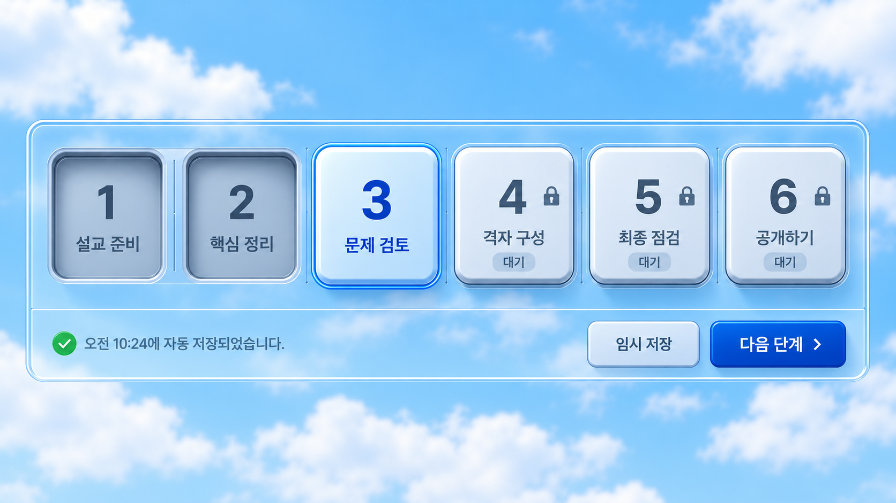
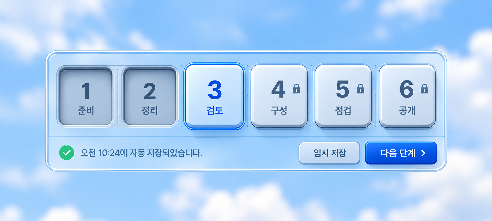
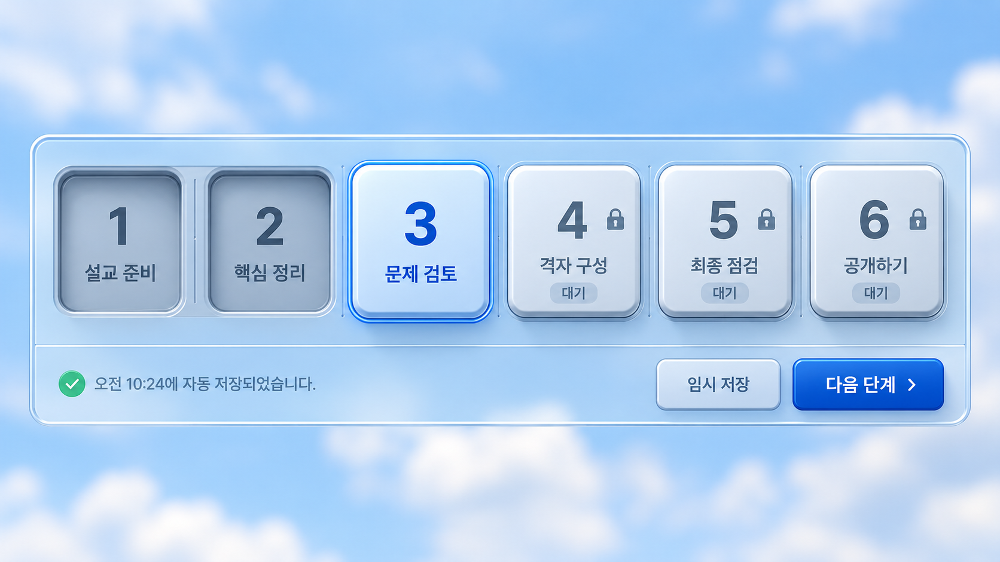

카세트 조작판과 단계 도움말
투명한 조작판과 불투명한 본문을 분리했습니다. 여섯 키는 작은 화면에서도 한 행이며, 이전 단계는 깊게 눌린 면으로 표시합니다.
상단의 임시 저장은 실제 저장과 연결됩니다. 다음 단계는 진행 중인 자동 저장과 남은 편집의 저장을 마친 뒤 이동합니다. 저장 실패나 재검수가 필요한 경우에는 현재 단계에 머무릅니다. 등록 전 입력은 이 브라우저에 임시 보관하며 빈 퀴즈를 만들지 않습니다.
네 시간대 비교

생성 시안 · 형태와 색 참고용입니다. 아래는 실제 구현 화면입니다.
좁은 화면의 한 줄 조작판

모바일 조작판 생성 시안 · 320/375/425px 실제 화면에서 한 줄 유지와 가로 넘침을 확인했습니다.
제목 옆 물음표와 도움말 모달
현재 단계의 용어와 화면 예시를 모았습니다. 작은 예시를 눌러 확대해도 원래 도움말 창은 유지됩니다.
실제 로컬 새 퀴즈 화면
기존 작업을 수정하지 않고 촬영했습니다. 페이지를 여는 것만으로 새 퀴즈가 생기지 않습니다.
기준이 된 원본 생성 시안

모바일 이미지는 실제 앱을 모바일 크기의 브라우저로 검수한 결과입니다. 실제 휴대폰에서의 확인과는 구분합니다. 모든 이미지는 누르면 원본 크기로 열립니다.